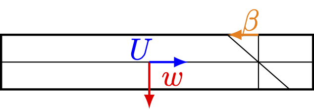
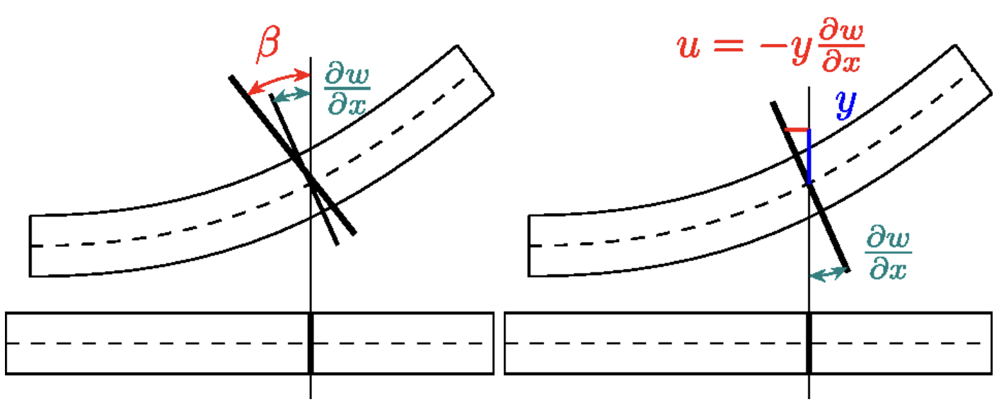

8. Plates from 3D elasticity#
This notebook derives the Reissner-Mindlin and Kirchhoff-Love plate models by a dimension reduction of 3D linearized elasticity. We start from a thin-walled structure with the small thickness \(t\)
and from the linear elasticity problem: Find \(u\in [H^1(\Omega)]^3\) such that for all \(v\in [H^1(\Omega)]^3\)
The linearized strain tensor is \(\varepsilon(u)\), and the stress-strain relation is \(\sigma=\mathbb{C}\varepsilon(u)\). For simplicity, we assume that the structure is clamped at \(\partial\omega\times (-t/2,t/2)\).
8.1. 3D model and plane stress assumption#
For isotropic linear elasticity
A plate model describes the midsurface displacement and rotations. One additionally uses the plane-stress assumption
which removes artificial stiffness in the thickness direction. Eliminating the thickness strain gives the two-dimensional plate elasticity tensor
8.2. Reissner-Mindlin kinematics#
The Reissner-Mindlin ansatz keeps an independent rotation field
and a transverse displacement
The 3D displacement is approximated by
{kind=link}

The strain tensor then separates into bending and transverse shear contributions:
Thus the bending strain is given by \(\varepsilon(\beta)\), while the shear strain is \(\nabla w-\beta\).
8.3. Thickness scaling#
Integrating through the thickness gives
Therefore bending scales like \(t^3\), while transverse shear scales like \(t\). After a load rescaling and division by \(t^3\), the weak form of the Reissner-Mindlin problem reads:
Find \((w,\beta)\in H^1_0(\omega)\times [H^1_0(\omega)]^2\) such that
for all \((v,\delta)\in H^1_0(\omega)\times [H^1_0(\omega)]^2\). Here, we denoted the shearing modulus \(G\) and the shear correction factor \(\kappa\) by
We note that the shear correction factor \(\kappa\) does not follow from the derivation but is additionally added to compensate for high-order effects of the shear stresses, which are not constant through the thickness.
The factor \(t^{-2}\) is the source of potential shear locking for very thin plates.
8.4. Kirchhoff-Love limit#
{kind=link}

The Kirchhoff-Love assumption says that normals to the midsurface remain normal after deformation. In the linearized setting this eliminates the rotation \(\beta\)
Inserting this constraint into the bending energy gives the Kirchhoff-Love plate model:
Find \(w\in H^2_0(\omega)\) such that
In strong form this is the fourth-order equation
The Kirchhoff-Love plate model does not suffer from shear locking as the shear has been eliminated. However, the costs we have to pay is that we need to discretize a fourth-order problem, which is more challenging.
8.5. Boundary conditions and physical quantities#
For Reissner-Mindlin plates the bending moment and shear force are
Typical boundary conditions for the Reissner-Mindlin plate are given by
boundary conditions |
\(w\) |
\(\beta_n\) |
\(\beta_t\) |
resulting conditions |
|---|---|---|---|---|
clamped |
D |
D |
D |
\(w=0\), \(\beta=0\) |
free |
N |
N |
N |
\(Q\cdot n=0\), \(Mn=0\) |
hard simply supported |
D |
N |
D |
\(w=0\), \(n^\top Mn=0\), \(\beta_t=0\) |
soft simply supported |
D |
N |
N |
\(w=0\), \(Mn=0\) |
The boundary conditions for the Kirchhoff-Love plate can be summarized with the bending moment \(M = \mathbb{D}\nabla^2 w\) as
boundary conditions |
\(w\) |
\(\partial_n w\) |
resulting conditions |
|---|---|---|---|
clamped |
D |
D |
\(w=0\), \(\partial_n w=0\) |
simply supported |
D |
N |
\(w=0\), \(M_{nn}=0\) |
free |
N |
N |
\(M_{nn}=0\), \(\frac{\partial M_{nt}}{\partial t}+\mathrm{div}(M)\cdot n=0\) |
free (corner condition) |
\([\![ M_{nt}]\!]_x = M_{n_1t_1}(x)-M_{n_2t_2}(x)=0\quad \forall x\in \mathcal{V}_{\Gamma_f}\) |
\(\mathcal{V}_{\Gamma_f}\) denotes the set of corner points where the two adjacent edges belong to \(\Gamma_f\). Here, \(n\) and \(t\) denote the outer normal and tangential vector on the plate boundary. Physically, \(M_{nn}:=n^\top M n\) is the normal bending moment, \(\partial_t(t^\top M n) + n^\top\mathrm{div}(M)\) the effective transverse shear force, and \(\sigma_{nt}:=t^\top M n\) the torsion moment. Further, the effective shear force \(Q_{\mathrm{eff}}\) is given by \(Q_{\mathrm{eff}}=-\mathrm{div}(M)\).
The mixed methods in the next two notebooks are designed around the physical variables rotations and moments.